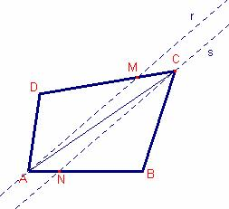

Problema 314
Probema 314
Sea ABC un triángulo
cualquiera. Con un punto D se obtiene un cuadrilátero ABCD.
Construir las
bisectrices de los ángulos DAB y DCB.
¿Dónde colocar el punto
D para que las bisectrices de DAB y DCB sean paralelas?
Estudiar esta situación
y justificar vuestras conjeturas.
Clapponi, P. (1994): Activité
.. des bissectrices
paralleles. Petit X 35,. [Clapponi es un seudónimo de Philippe Clarou - Bernard Capponi].
Esta actividad comienza
por una exploración que puede ser beneficiosa con la ayuda de un logicial como Cabri-Géomètre.
Solución:
Sea  un triángulo
cualquiera.
un triángulo
cualquiera.
Supongamos el problema resuelto.

Sea D el punto tal que la bisectriz r del ángulo y la bisectriz s del ángulo son paralelas.Sea M el punto donde la recta r corta el lado .
Sea N el punto donde la recta s corta el lado 
Sea .
Sea
por
ser r y s rectas paralelas.
por
ser r y s rectas paralelas.
La suma de los ángulos del triángulo es 180º, entonces,
.
La suma de los ángulos del triángulo es 180º, entonces,
.
Por tanto, el ángulo .
Entonces D es cualquier punto del arco capaz B
construido sobre el lado  y exterior al triángulo
y exterior al triángulo
 .
.
Con Cabri:
Figura baroso314.fig
Applet created
on 1/06/06 by Ricard Peiró CabriJava